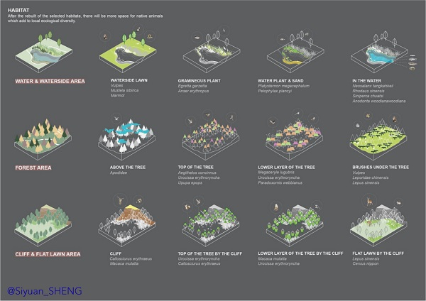

- [DATE] 07/2018 - 09/2018
- [SITE] Huzhou, China
- [AREA] 63.74ha
- [Personal Work] Ecosystem design, landscape design
-
After the "industrial revolution", people have become increasingly unsatisfied with the demand for nature. We destroyed nature
for economical growth and took pride of it, taking it as a symbol of civilization. As people becoming more aware of the magic
of nature and its importance, ecological protection is also increasingly valued.
-
This project is proposing a way to relive the abandoned site based on the local ecosystem, making the abandoned site green again in a nature language.
|
|
| |
-
After the rebuit of the selected habitate, there will be more spaces for native animals which add to local ecological diversity.
-
The research on the local resilient, trying to conclude the eco-system into three different main types and analyzed the main animals living in
different areas of the resilient. And then the design can made for diffrenet animals, creating different kinds of resilient to attracting animals. And thus,
animals will have more habitating spaces.
|
 |
| |
-
Based on the result got from the result, the design is trying to create three different habitating spaces in the abandoned area.
-
The layout is shown in the master plan. There are basically three types of spaces, including water along with watersdie area, forest area and
cliff with flat lawn area. The landscape is designed different adapt to each kind of environment. Combined with visitors sequence of visiting, the habitating areas
can provide different scene.
|
|
| |
-
The construction of three kinds of habitate give the animals more spaces to live in and through the simulation
of the nature habitate of the natural ones. The site will attract more kinds of animals to live which also provide
people an opportunity to get closer to the nature.
-
When attracting the different animals, there potentially be more visitors there. In this way, the abandoned site can be relived
in a green way.
|
|